NSM
Manuale Operativo
Piattaforma EOL Grenke — Fine Noleggio
Noleggio Su Misura / Smartcom Solutions Srl
Versione 1.0 — Maggio 2026
Flowchart — Processo End-of-Lease
Prima di entrare nel dettaglio di ogni funzionalita, questo flowchart offre una vista d'insieme dell'intero processo End-of-Lease. I badge Sez. N sopra ogni nodo rimandano alla sezione corrispondente del manuale.
Tavola 1 — Vista d'insieme (swimlane)
Mostra i tre attori principali (Grenke, NSM/Backoffice, Cliente) e le macro-fasi: ricezione nominativi, comunicazioni, decisione del cliente, restituzione esiti a Grenke.
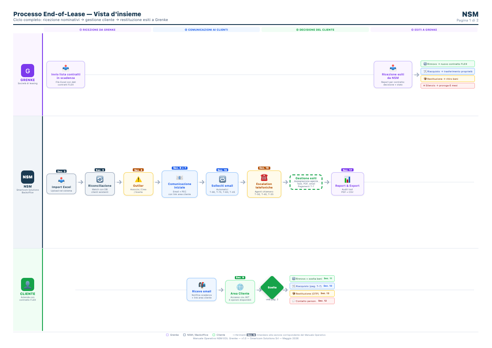
Tavola 1 — Processo EOL: vista d'insieme con swimlane Grenke / NSM / Cliente
Tavola 2 — Timeline e flussi decisionali
Dettaglia la timeline (da T-145 a T0) e i 4 percorsi possibili dopo la decisione del cliente: Rinnovo, Riacquisto, Restituzione, Silenzio.
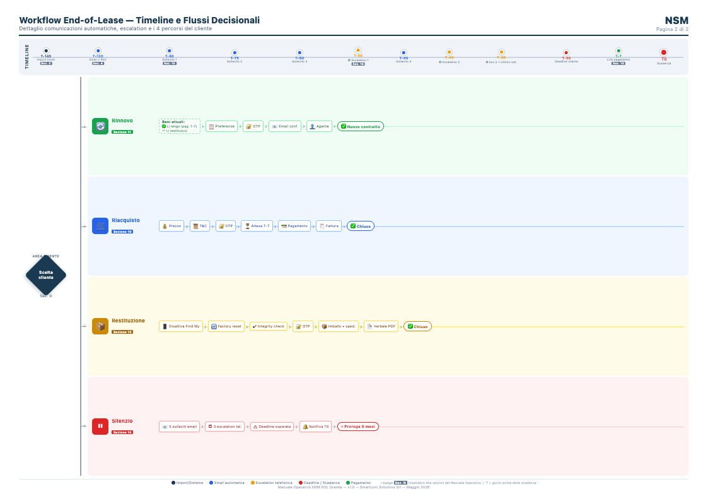
Tavola 2 — Timeline comunicazioni (T-145 → T0) e i 4 flussi decisionali del cliente
Come leggere il flowchart:
- I badge Sez. N indicano la sezione del manuale dove trovare la procedura operativa dettagliata
- Tavola 1: segui il flusso da sinistra a destra per capire chi fa cosa e quando
- Tavola 2: la timeline in alto mostra le scadenze automatiche; sotto, i 4 percorsi del cliente con tutti gli step
Il flowchart completo in formato PDF ad alta risoluzione e disponibile nel file Flowchart_EOL_Grenke_Completo.pdf allegato a questo manuale.
1. Accesso al sistema
Per accedere al backoffice, navigare all'indirizzo del portale e inserire le proprie credenziali (email e password).
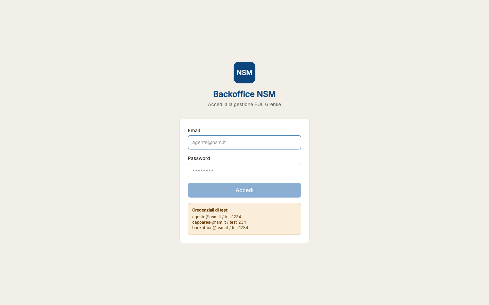
Fig. 1 — Schermata di login del Backoffice NSM
Credenziali
Le credenziali vengono fornite dall'amministratore. Ogni utente ha un ruolo assegnato che determina le funzionalita accessibili.
| Ruolo | Descrizione | Accesso |
|---|
| ADMIN | Amministratore di sistema | Tutte le funzionalita |
| BACKOFFICE_INTERNO | Operatore backoffice | Import, Outlier, Comunicazioni, Report |
| CAPO_AREA | Responsabile area | Dashboard, Pratiche, Report, Escalation |
| AGENTE | Agente commerciale | I miei task, Pratiche assegnate |
| JUNIOR_AGENT | Agente junior | I miei task, Pratiche assegnate |
Procedura: Inserire email e password, poi cliccare "Accedi". Dopo il login si viene reindirizzati alla Dashboard.
2. Dashboard
La Dashboard e la schermata principale che fornisce una visione d'insieme sullo stato delle pratiche EOL.
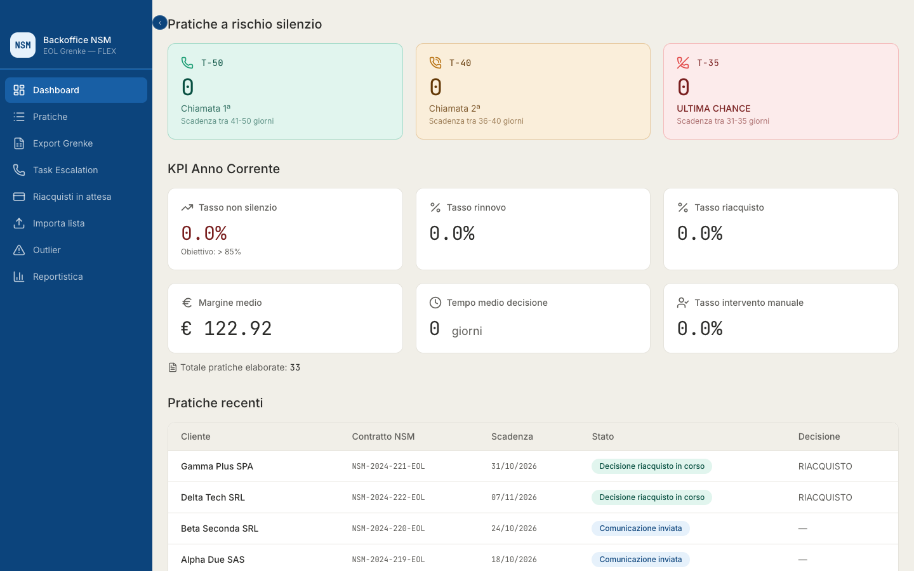
Fig. 2 — Dashboard con KPI e pratiche a rischio silenzio
Pratiche a rischio silenzio
Nella parte superiore, tre card colorate mostrano le pratiche che richiedono intervento telefonico urgente:
| Fascia | Giorni alla scadenza | Azione | Colore |
|---|
| T-50 | 41-50 giorni | Chiamata 1a | Blu |
| T-40 | 36-40 giorni | Chiamata 2a | Giallo |
| T-35 | 31-35 giorni | ULTIMA CHANCE | Rosso |
KPI Anno Corrente
Sei indicatori chiave di performance:
- Tasso non-silenzio — percentuale di pratiche che hanno ricevuto una risposta dal cliente (obiettivo: > 85%)
- Tasso rinnovo — percentuale di clienti che rinnovano il contratto
- Tasso riacquisto — percentuale di clienti che acquistano il bene
- Margine medio — margine lordo medio per pratica
- Tempo medio decisione — giorni medi tra comunicazione e decisione
- Tasso intervento manuale — percentuale di decisioni registrate manualmente dall'operatore
Pratiche recenti
Tabella con le ultime pratiche aggiornate, incluso stato corrente e decisione.
3. Importazione lista contratti
L'importazione e il punto di partenza del workflow. Si carica il file Excel ricevuto da Grenke contenente la lista dei contratti in scadenza.
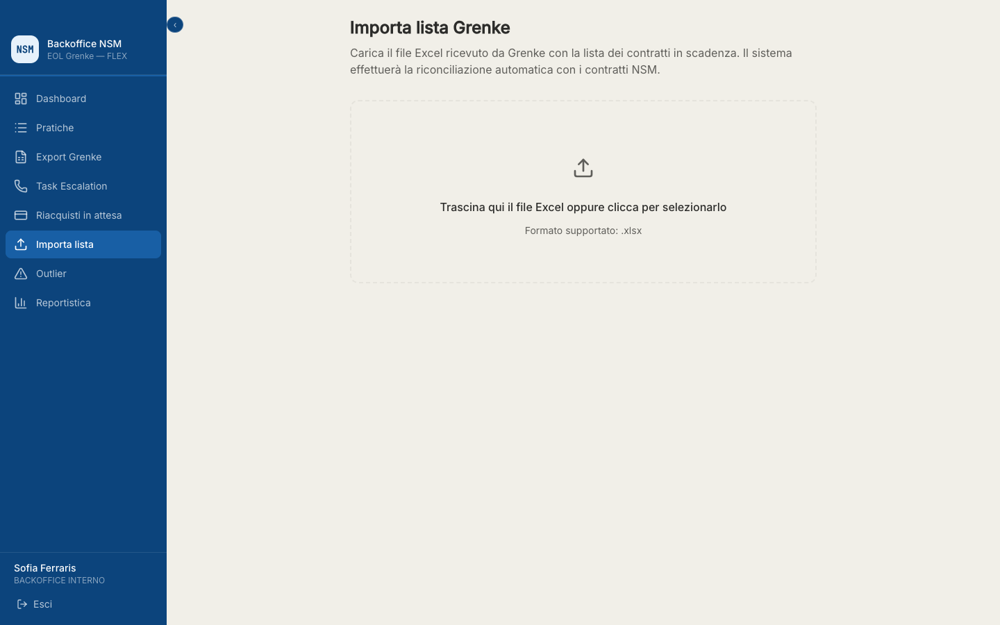
Fig. 3 — Pagina di importazione lista Excel
Procedura
- Cliccare su "Seleziona file" o trascinare il file Excel nell'area tratteggiata
- Il sistema analizza il file e mostra un'anteprima dei dati trovati
- Viene eseguita la riconciliazione automatica: ogni riga viene confrontata con i clienti esistenti nel database tramite il codice contratto Grenke
- I risultati vengono mostrati in tre categorie:
- Riconciliati — contratti abbinati a clienti esistenti
- Outlier — contratti senza corrispondenza (da gestire manualmente)
- Errori — righe con dati mancanti o non validi
- Per gli outlier, inserire una motivazione per ogni riga (campo obbligatorio)
- Cliccare "Conferma importazione" per salvare i contratti riconciliati nel database
Formato file: Il file Excel deve contenere le colonne mappate nella configurazione (excel_mapping.json). Le colonne obbligatorie sono: codice contratto Grenke, ragione sociale, P.IVA, data scadenza, canone mensile, numero mesi, beni.
Riconciliazione automatica
Il sistema cerca corrispondenze nel database per ogni riga del file:
- Match esatto: il codice contratto Grenke corrisponde a un contratto esistente
- Outlier con suggerimenti: nessun match esatto, ma il sistema propone clienti simili per P.IVA o ragione sociale (fuzzy matching)
- Outlier senza suggerimenti: nessuna corrispondenza trovata
Anteprima importazione
Dopo il caricamento del file, il sistema mostra un'anteprima con il riepilogo della riconciliazione. Ogni riga riporta lo stato assegnato, i dati economici calcolati (monte canoni, prezzo riacquisto, gift card) e la ragione sociale del cliente.
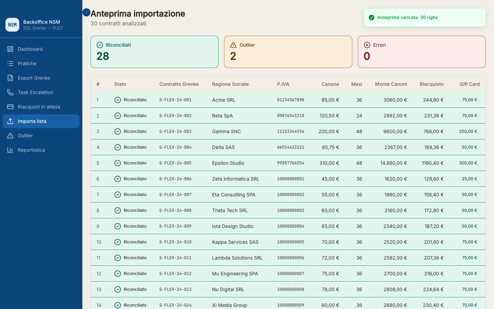
Fig. 3b — Anteprima importazione: 30 contratti analizzati, 28 riconciliati, 2 outlier, 0 errori
4. Gestione outlier
Gli outlier sono contratti importati che non hanno trovato corrispondenza automatica nel database. Devono essere gestiti manualmente.
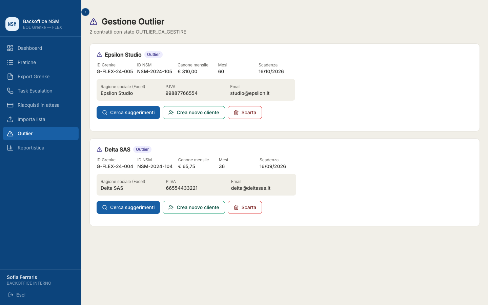
Fig. 4 — Pagina gestione outlier
Azioni disponibili
| Azione | Descrizione | Quando usarla |
|---|
| ASSOCIA |
Collega l'outlier a un cliente esistente nel database |
Il cliente esiste ma con dati leggermente diversi (es. ragione sociale variata) |
| CREA |
Crea un nuovo cliente e contratto nel database |
Il cliente e completamente nuovo, mai importato prima |
| SCARTA |
Ignora l'outlier con motivazione obbligatoria |
Errore nel file Excel, contratto gia gestito, duplicato |
Attenzione: Per ogni azione e obbligatorio inserire una motivazione che viene registrata nell'audit log. Questa sezione e accessibile solo ai ruoli BACKOFFICE_INTERNO e ADMIN.
5. Lista pratiche
La lista pratiche e il cuore operativo del sistema. Mostra tutti i contratti EOL con filtri avanzati, ordinamento e paginazione.
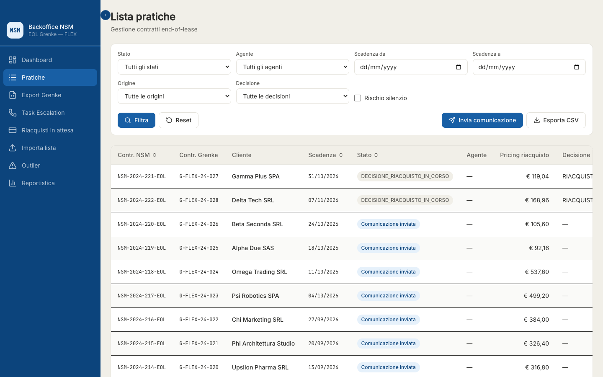
Fig. 5 — Lista pratiche con filtri e stato comunicazione
Filtri disponibili
- Stato — filtra per stato della pratica (es. Lista ricevuta, Comunicazione inviata, Decisione riacquisto in corso, ecc.)
- Agente — filtra per agente assegnato
- Scadenza da/a — intervallo date di scadenza
- Origine — Smartcom o altra origine
- Decisione — tipo di decisione presa dal cliente
- Rischio silenzio — mostra solo le pratiche senza risposta
Colonne della tabella
| Colonna | Descrizione |
|---|
| Contr. NSM | Codice interno NSM del contratto |
| Contr. Grenke | Codice contratto Grenke originale |
| Cliente | Ragione sociale del cliente |
| Scadenza | Data di scadenza del contratto |
| Stato | Stato corrente della pratica (con badge colorato) |
| Agente | Agente assegnato alla pratica |
| Pricing riacquisto | Prezzo di riacquisto calcolato (8% del monte canoni) |
| Decisione | Decisione del cliente (se registrata) |
| Azioni | Icona per accedere al dettaglio pratica |
Azioni di massa
- Invia comunicazioni — invia la comunicazione iniziale a tutti i clienti con stato "Lista ricevuta" che non hanno ancora ricevuto email
- Esporta CSV — scarica la lista filtrata in formato CSV
6. Invio comunicazioni
Il sistema invia automaticamente la comunicazione iniziale a tutti i clienti, su due canali: email ordinaria e PEC.
Procedura
- Dalla lista pratiche, cliccare il bottone "Invia comunicazioni"
- Il sistema invia in batch le email a tutte le pratiche in stato "Lista ricevuta"
- Al termine, un banner mostra il riepilogo: inviati / saltati / errori
- Lo stato di ogni pratica aggiornata passa a Comunicazione inviata
Contenuto della comunicazione
Ogni email contiene:
- Dati del contratto (codice, scadenza, beni in locazione)
- Le 4 opzioni disponibili per il cliente (rinnovo, riacquisto, contatto personalizzato, restituzione)
- Un link univoco (JWT) per accedere all'area cliente
- La deadline per comunicare la scelta
- Un avviso che in assenza di risposta il contratto andra in proroga automatica
Canali di invio: Ogni cliente riceve la comunicazione sia via email ordinaria sia via PEC (2 email per pratica). Entrambi gli invii vengono tracciati nella timeline della pratica.
7. Template email
Le email inviate ai clienti utilizzano template HTML professionali con il branding NSM/Smartcom.
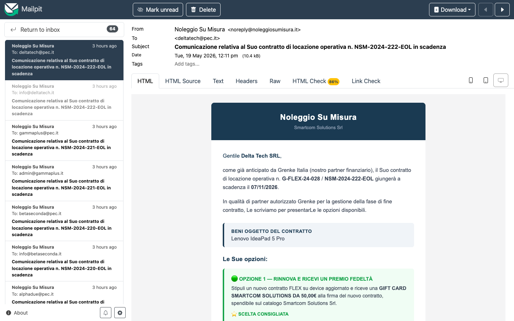
Fig. 6 — Email comunicazione iniziale visualizzata in Mailpit
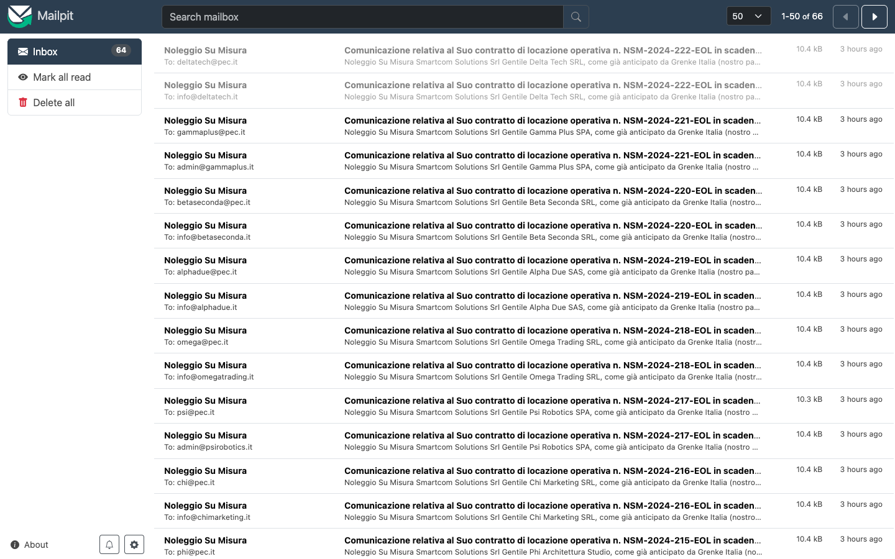
Fig. 7 — Inbox Mailpit con tutte le email inviate (66 totali: 33 email + 33 PEC)
Struttura dell'email
- Header — Logo e nome "Noleggio Su Misura - Smartcom Solutions Srl"
- Oggetto — "Comunicazione relativa al Suo contratto di locazione operativa n. [codice] in scadenza"
- Corpo — Saluto personalizzato, dati contratto, beni, 4 opzioni con colori diversi
- CTA — Bottone "Scegli la tua opzione" che rimanda all'area cliente
- Footer — Deadline, avviso proroga, dati aziendali, link opt-out GDPR
Le 4 opzioni presentate
| Opzione | Colore | Descrizione |
|---|
| 1. Rinnova il contratto | Verde | Nuovo contratto FLEX + Gift Card fedelta (scelta consigliata) |
| 2. Prenota l'acquisto del bene | Blu | Riacquisto al prezzo indicato (8% monte canoni + IVA a margine) |
| 3. Contatto personalizzato | Giallo | Richiesta di essere ricontattati da un consulente |
| 4. Restituisci il bene | Rosso | Reso con procedura di disattivazione e spedizione |
8. Dettaglio pratica
Il dettaglio pratica mostra tutte le informazioni relative a un singolo contratto, organizzate in 4 tab.

Fig. 8 — Tab Panoramica con dati cliente, contratto, calcolo economico e stato
Tab Panoramica
- Dati cliente — Ragione sociale, P.IVA, email, PEC, telefono, indirizzo
- Calcolo economico — Pricing Grenke (5%), pricing riacquisto (8%), margine lordo (3%), IVA a margine (22% sul margine lordo, non sul prezzo pieno), valore gift card, valore originario
- Dati contratto — Codice NSM, codice Grenke, date, canone, mesi, monte canoni, beni
- Stato corrente — Stato, origine, agente assegnato, decisioni registrate
Tab Timeline
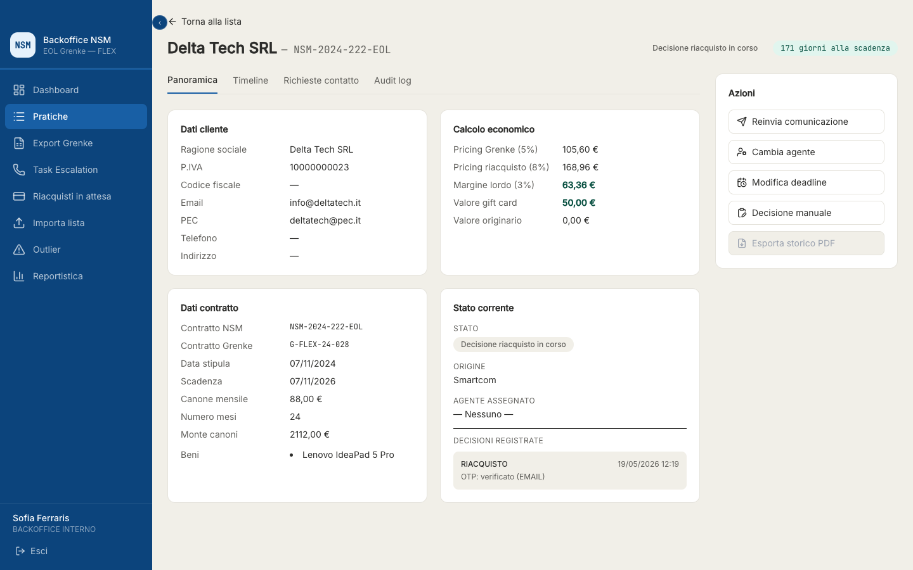
Fig. 9 — Tab Timeline con storico di tutte le comunicazioni ed eventi
La timeline mostra tutti gli eventi in ordine cronologico: invio comunicazioni (con canale ed esito), decisioni del cliente, interventi manuali dell'operatore, escalation telefoniche.
Tab Richieste contatto
Lista delle richieste di contatto inviate dal cliente tramite l'area pubblica.
Tab Audit log
Registro completo di tutte le azioni eseguite sulla pratica, con timestamp e operatore.
Azioni disponibili (sidebar destra)
| Azione | Descrizione |
|---|
| Reinvia comunicazione | Invia nuovamente l'email al cliente |
| Cambia agente | Riassegna la pratica a un altro agente |
| Modifica deadline | Sposta la deadline di risposta del cliente |
| Decisione manuale | Registra manualmente una decisione (es. comunicata per telefono) |
| Esporta storico PDF | Scarica un PDF con lo storico completo della pratica |
9. Area cliente
L'area cliente e la pagina pubblica accessibile dal link contenuto nell'email. Non richiede login: l'autenticazione avviene tramite token JWT nell'URL.
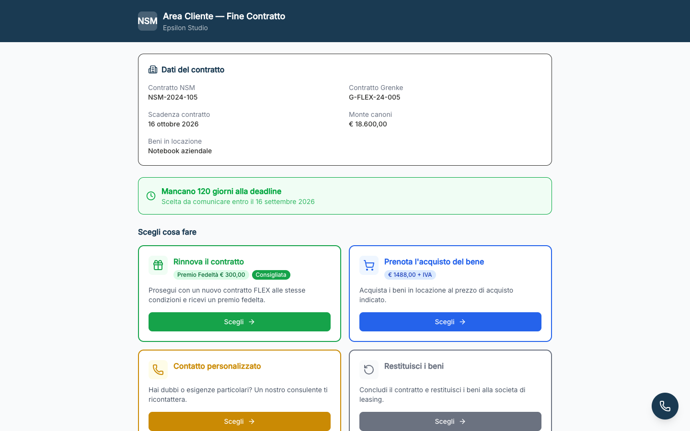
Fig. 10 — Area cliente con le 4 opzioni di scelta
Cosa vede il cliente
- Dati del contratto — Codice NSM, codice Grenke, scadenza, monte canoni, beni
- Countdown — Giorni rimanenti alla deadline con data esatta
- 4 opzioni di scelta — Ciascuna con bottone "Scegli"
Sicurezza
- Accesso tramite token JWT con scadenza
- Verifica OTP a 6 cifre (via email o SMS) prima di confermare decisioni
- Se il token e scaduto, viene mostrata la pagina "Termine scaduto" con numero di telefono per contattare NSM
Link opt-out: Nel footer dell'email e presente un link per disattivare le comunicazioni automatiche future (GDPR compliance). Il flag viene registrato nel database e blocca ogni invio successivo.
10. Flusso riacquisto (esempio completo)
Quando il cliente sceglie "Prenota l'acquisto del bene", viene guidato attraverso un flusso in piu step.
Step 1 — Riepilogo prezzo
Il cliente vede il dettaglio del costo del bene: prezzo netto (8% del monte canoni), IVA a margine (22% calcolata sulla differenza tra prezzo di vendita e prezzo di acquisto Grenke) e totale. Può scegliere se farsi contattare prima oppure procedere direttamente.
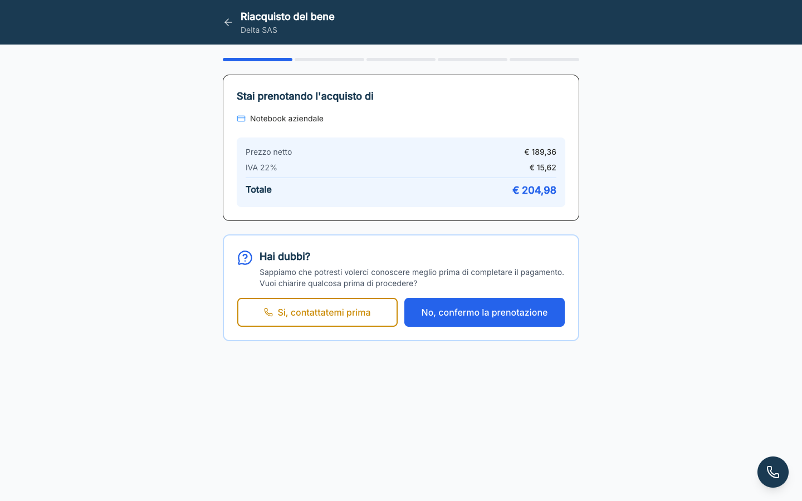
Fig. 10a — Step 1: riepilogo prezzo e scelta se procedere o richiedere contatto
Step 2 — Termini e condizioni
Il cliente deve leggere e accettare le condizioni generali di riacquisto, che specificano:
- Il pagamento dell'acconto non comporta trasferimento immediato di proprieta
- Il trasferimento avverra alla data T+11 dalla scadenza del contratto Grenke
- La fattura verra emessa tramite Sistema di Interscambio (SDI)
Dopo aver spuntato la casella di accettazione, appaiono i pulsanti per ricevere il codice OTP via Email o SMS.
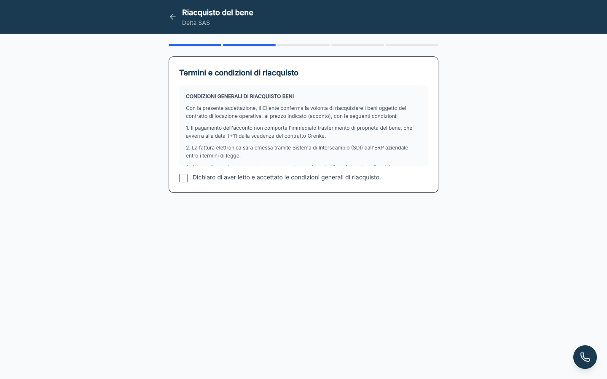
Fig. 10b — Step 2: termini e condizioni con checkbox di accettazione
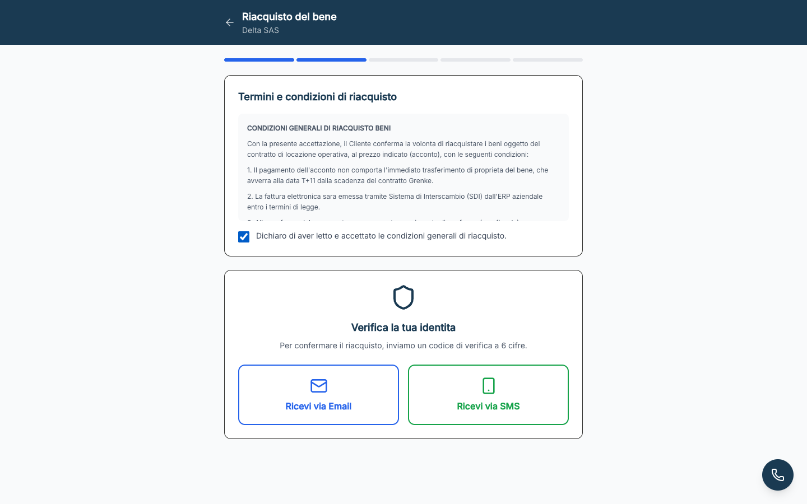
Fig. 10c — Step 2 (dopo accettazione): scelta del canale OTP (Email o SMS)
Step 3 — Verifica identita (OTP)
Il sistema invia un codice di verifica a 6 cifre via email o SMS. Il cliente inserisce il codice entro 10 minuti per confermare la decisione.
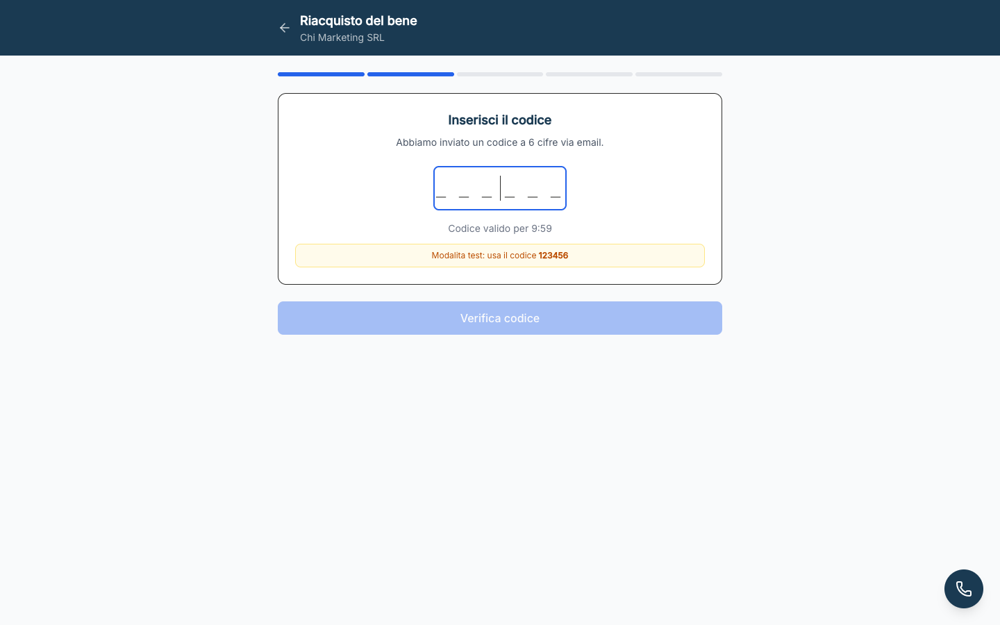
Fig. 10d — Step 3: inserimento codice OTP a 6 cifre
Step 4 — Conferma e pagamento differito
La decisione viene registrata. Il pagamento NON e immediato: il cliente ricevera il link per pagare a T-7 (7 giorni prima della scadenza del contratto), insieme alla data esatta indicata a schermo.
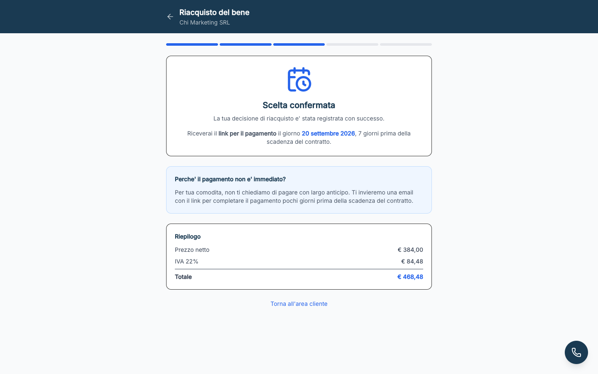
Fig. 10e — Step 4: scelta confermata con data di pagamento T-7 e riepilogo importo
Pagamento differito T-7: Per comodita del cliente, il pagamento viene richiesto solo 7 giorni prima della scadenza del contratto. Questo riduce l'attrito e aumenta il tasso di conversione.
Cosa succede nel backoffice
Dopo la conferma del cliente:
- Lo stato della pratica cambia in Decisione riacquisto in corso
- La decisione viene registrata con timestamp e metodo di verifica OTP
- La pratica appare nella sezione "Riacquisti in attesa" quando si avvicina la data di pagamento
11. Flusso rinnovo contratto
Quando il cliente sceglie "Rinnova il contratto", viene guidato in un wizard a 4 step che comprende la scelta relativa ai beni attuali, le preferenze per il nuovo contratto e la conferma via OTP. Un singolo codice OTP conferma entrambe le decisioni (beni + rinnovo).
Step 1 — Scelta beni attuali
Il primo step chiede al cliente cosa fare con i dispositivi attualmente in locazione. Sono disponibili due opzioni:
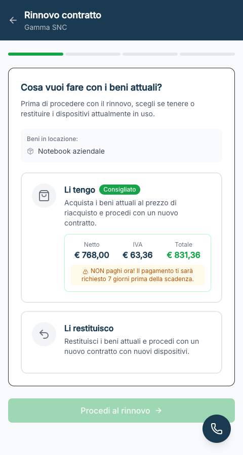
Fig. 11a — Step 1: il cliente sceglie se tenere o restituire i beni attuali
"Li tengo" (consigliato)
Il cliente acquista i beni al prezzo di riacquisto indicato. La card mostra il dettaglio economico (netto, IVA a margine, totale) e un avviso chiaro: il pagamento non è immediato ma verrà richiesto 7 giorni prima della scadenza del contratto. L'IVA è calcolata solo sul margine (differenza tra prezzo di vendita e prezzo di acquisto Grenke), come previsto dal regime del margine.
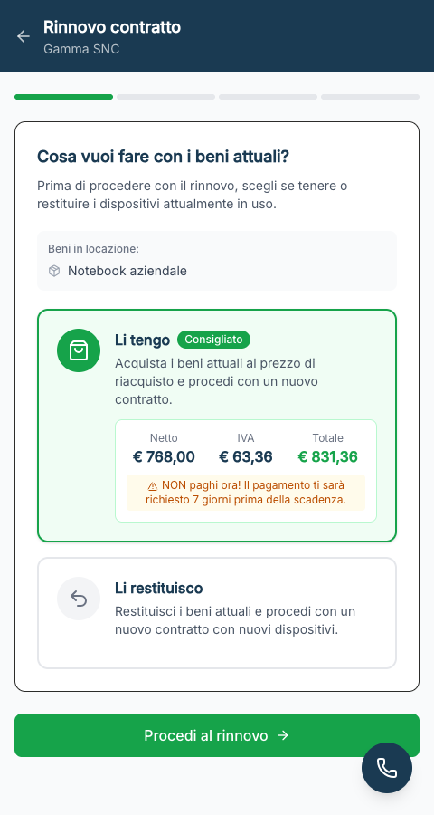
Fig. 11b — Opzione "Li tengo" selezionata con dettaglio prezzi e avviso pagamento differito
"Li restituisco"
Se il cliente preferisce restituire i beni, vengono mostrate le 5 istruzioni operative per la restituzione. È richiesta una checkbox di conferma per procedere.
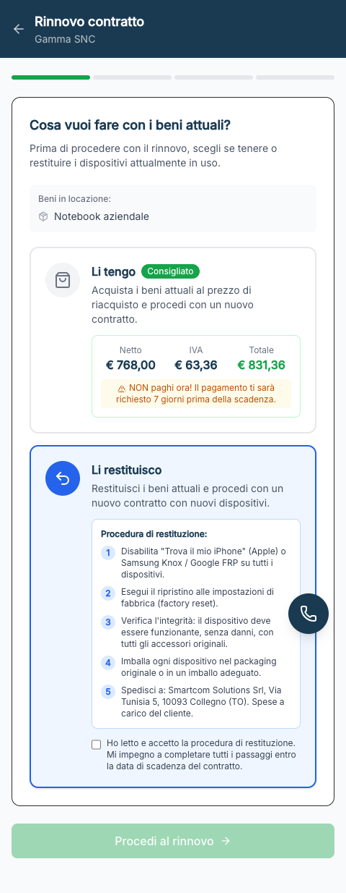
Fig. 11c — Opzione "Li restituisco" con procedura di restituzione in 5 step e checkbox obbligatoria
Step 2 — Preferenze nuovo contratto
Il cliente indica le sue esigenze per il nuovo contratto FLEX. In cima alla pagina viene mostrato il banner con la gift card Smartcom Solutions come incentivo al rinnovo.
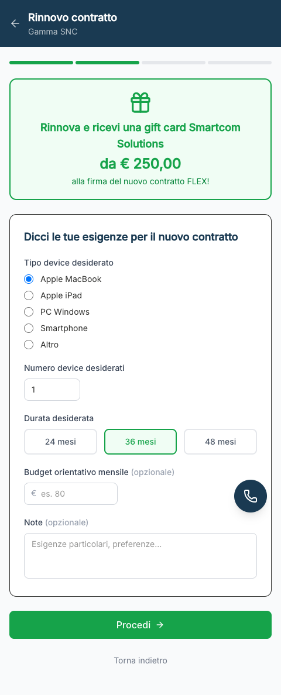
Fig. 11d — Step 2: il cliente indica tipo device, quantità, durata e budget desiderati
Campi del form
- Tipo device desiderato — Apple MacBook, iPad, PC Windows, Smartphone, Altro
- Numero device desiderati — quantità
- Durata desiderata — 24, 36 o 48 mesi
- Budget orientativo mensile (opzionale)
- Note (opzionale) — richieste particolari
Step 3 — Riepilogo e conferma OTP
Viene mostrato un riepilogo completo con la scelta sui beni e le preferenze per il nuovo contratto. Il cliente conferma inviando un codice OTP a 6 cifre (via Email o SMS).
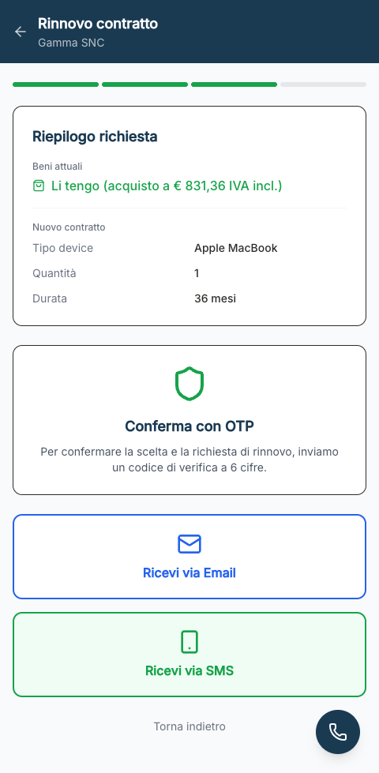
Fig. 11e — Step 3: riepilogo completo (scelta beni + preferenze rinnovo) e scelta canale OTP
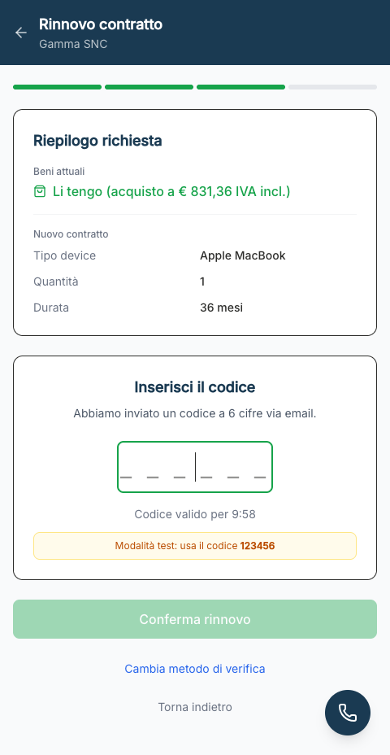
Fig. 11f — Step 3: inserimento del codice OTP a 6 cifre per confermare entrambe le decisioni
Nota importante: Un singolo codice OTP conferma contemporaneamente sia la scelta relativa ai beni (tenere/restituire) sia la richiesta di rinnovo. Il sistema registra due decisioni distinte in un'unica transazione.
Step 4 — Conferma finale
La schermata di conferma mostra il riepilogo delle scelte effettuate, la gift card prevista e i prossimi passi.
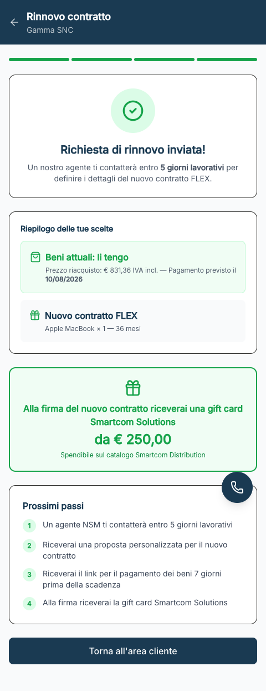
Fig. 11g — Step 4: conferma finale con riepilogo scelte, data pagamento (se "Li tengo"), gift card e prossimi passi
Prossimi passi mostrati al cliente
- Un agente NSM lo contatterà entro 5 giorni lavorativi
- Riceverà una proposta personalizzata per il nuovo contratto
- Se ha scelto "Li tengo": riceverà il link per il pagamento dei beni 7 giorni prima della scadenza
- Se ha scelto "Li restituisco": dovrà completare la procedura di restituzione entro la data di scadenza
- Alla firma del nuovo contratto riceverà la gift card Smartcom Solutions
Cosa succede nel backoffice
Il sistema registra due decisioni nella pratica:
- Decisione beni —
RINNOVO_RIACQUISTO_BENI (se "Li tengo") o RINNOVO_RESTITUZIONE_BENI (se "Li restituisco")
- Decisione rinnovo —
RINNOVO con i dettagli della prequalificazione
L'agente assegnato riceve una notifica email con tutti i dettagli (scelta beni, preferenze rinnovo, prezzo riacquisto se applicabile). La pratica passa in stato DECISIONE_RINNOVO.
Pagamento differito (se "Li tengo"): Il pagamento per l'acquisto dei beni viene gestito con la stessa logica del flusso riacquisto: il link di pagamento viene inviato automaticamente 7 giorni prima della scadenza del contratto (T-7).
12. Flusso contatto personalizzato
Quando il cliente non è sicuro su cosa fare o vuole valutare più opzioni insieme a un consulente, sceglie "Contatto personalizzato". Il sistema raccoglie le sue preferenze di contatto.
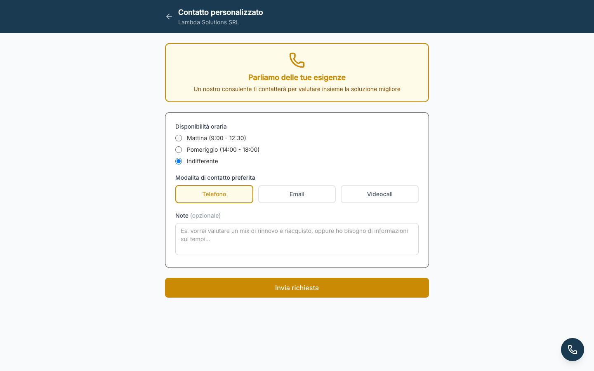
Fig. 12 — Flusso contatto personalizzato: il cliente indica disponibilità oraria e modalità preferita
Cosa compila il cliente
- Disponibilità oraria — Mattina (9:00–12:30), Pomeriggio (14:00–18:00), Indifferente
- Modalità di contatto preferita — Telefono, Email, Videocall
- Note (opzionale) — es. "vorrei valutare un mix di rinnovo e riacquisto"
Cosa succede nel backoffice
La richiesta viene registrata nella sezione "Richieste contatto" della pratica. L'agente assegnato riceve il task di richiamare il cliente nella fascia oraria indicata. Dopo la chiamata, l'esito viene registrato con il bottone "Segna richiamato".
Nota: Il flusso contatto personalizzato è pensato per clienti indecisi o con situazioni particolari (es. dispositivi danneggiati, richieste fuori standard, necessità di trattativa). Non blocca le altre opzioni: il cliente potrà comunque scegliere rinnovo o riacquisto in seguito.
13. Flusso restituzione beni
Quando il cliente sceglie di restituire i beni a fine contratto, viene guidato attraverso le istruzioni operative obbligatorie e deve confermare di averle lette prima di procedere.
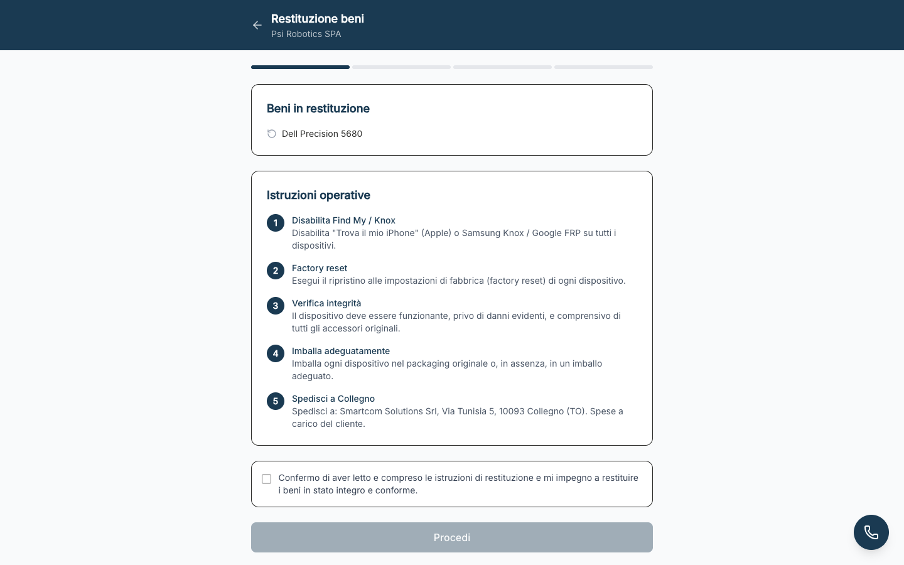
Fig. 13 — Flusso restituzione: istruzioni operative da seguire prima della spedizione
Istruzioni operative (5 step obbligatori)
- Disabilita Find My / Knox — Disabilita "Trova il mio iPhone" (Apple) o Samsung Knox / Google FRP su tutti i dispositivi
- Factory reset — Esegui il ripristino alle impostazioni di fabbrica di ogni dispositivo
- Verifica integrità — Il dispositivo deve essere funzionante, privo di danni evidenti e comprensivo di tutti gli accessori originali
- Imballa adeguatamente — Usa il packaging originale o, in assenza, un imballo adeguato
- Spedisci a Collegno — Smartcom Solutions Srl, Via Tunisia 5, 10093 Collegno (TO). Le spese di spedizione sono a carico del cliente
Conferma e OTP
Il cliente deve spuntare la casella di presa visione delle istruzioni e cliccare "Procedi". Come per il riacquisto, viene richiesta una verifica OTP (codice a 6 cifre via email o SMS) per confermare la decisione.
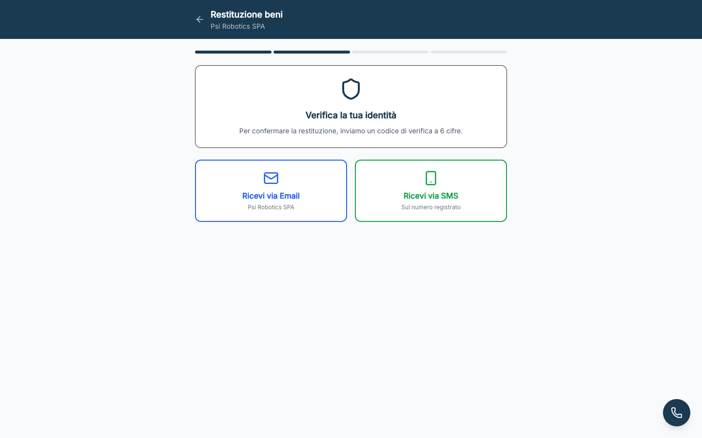
Fig. 13b — Selezione canale OTP: il cliente sceglie se ricevere il codice via Email o via SMS
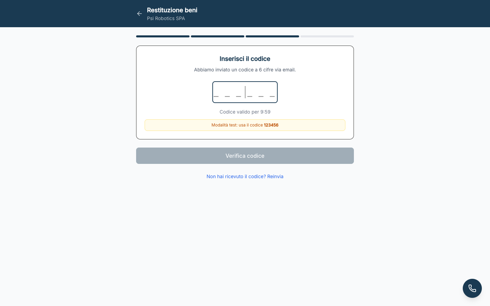
Fig. 13c — Inserimento del codice OTP a 6 cifre per confermare la restituzione
Cosa succede nel backoffice
La decisione di restituzione viene registrata nella timeline. Lo stato della pratica aggiornato riflette la scelta del cliente. L'agente monitora l'arrivo della spedizione e chiude la pratica a ricezione confermata.
Attenzione: I costi di spedizione sono sempre a carico del cliente. In caso di danni al dispositivo non dichiarati, Grenke può applicare penali contrattuali. L'integrity check pre-spedizione è fondamentale per evitare contestazioni.
14. Task escalation telefonica
Le escalation telefoniche sono il sistema di follow-up per i clienti che non rispondono alle email. Si attivano automaticamente in base alla vicinanza alla scadenza.
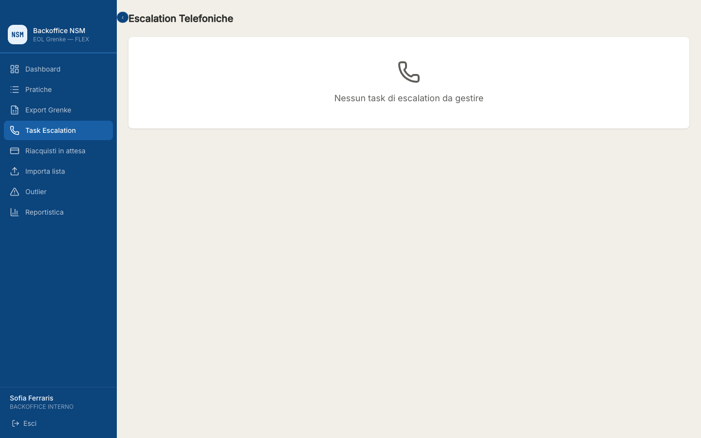
Fig. 14 — Pagina task escalation telefonica
Fasce di escalation
| Fascia | Quando | Chi chiama | Obiettivo |
|---|
| T-50 | 41-50 giorni prima della scadenza | Agente assegnato | Primo contatto telefonico, sollecitare risposta |
| T-40 | 36-40 giorni prima | Agente / Capo area | Secondo tentativo, sottolineare urgenza |
| T-35 | 31-35 giorni prima | Capo area / Manager | ULTIMA CHANCE — avvisare delle conseguenze del silenzio |
Script telefonici
Per ogni fascia di escalation, l'operatore dispone di uno script guidato che include:
- Presentazione e riferimento al contratto
- Riepilogo delle opzioni disponibili
- Enfasi sulla gift card fedelta (per il rinnovo)
- Avviso sulla proroga automatica in caso di silenzio
- Campi per annotare l'esito della chiamata
Target KPI: Il tasso di non-silenzio deve rimanere sopra l'85%. Ogni pratica che va in silenzio (nessuna risposta entro la deadline) rappresenta un margine perso.
15. Riacquisti in attesa
Questa sezione mostra le pratiche con decisione di riacquisto che sono in attesa di contatto prima del pagamento.
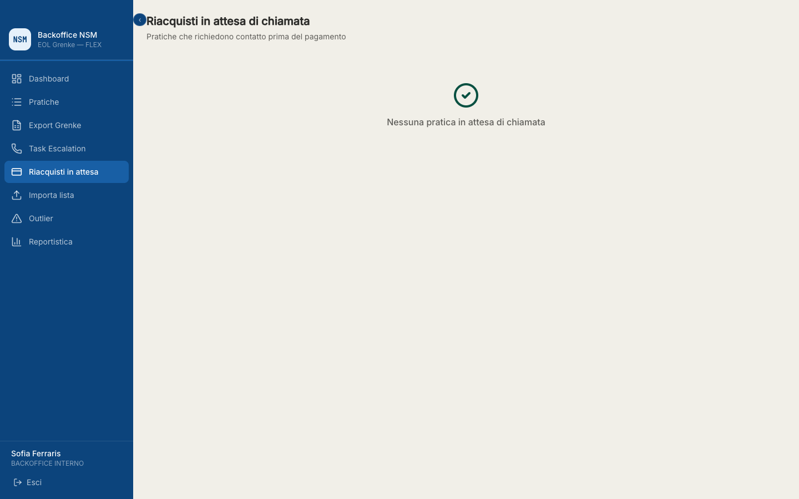
Fig. 15 — Pagina riacquisti in attesa di chiamata
Si popola quando un cliente, durante il flusso di riacquisto, sceglie "Si, contattatemi prima" invece di procedere direttamente al pagamento. L'operatore deve:
- Chiamare il cliente per chiarire eventuali dubbi
- Registrare l'esito della chiamata
- Sbloccare il pagamento se il cliente conferma
16. Reportistica
La sezione reportistica offre analisi complete sull'andamento delle pratiche EOL.
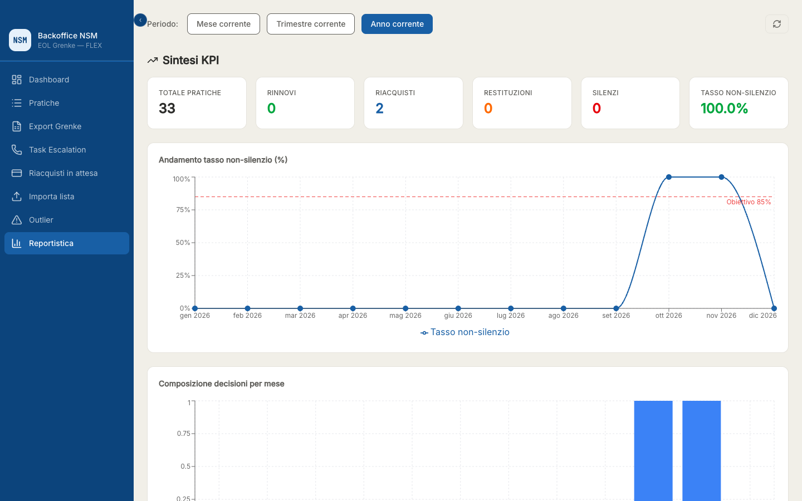
Fig. 16 — Reportistica con grafici KPI e composizione decisioni
Selettore periodo
Tre opzioni: Mese corrente, Trimestre corrente, Anno corrente.
Sintesi KPI
Card con i numeri chiave: totale pratiche, rinnovi, riacquisti, restituzioni, silenzi, tasso non-silenzio.
Grafici
- Andamento tasso non-silenzio (%) — Grafico a linea con obiettivo 85% come reference line tratteggiata
- Composizione decisioni per mese — Grafico a barre impilate (restituzioni, riacquisti, rinnovi, silenzi)
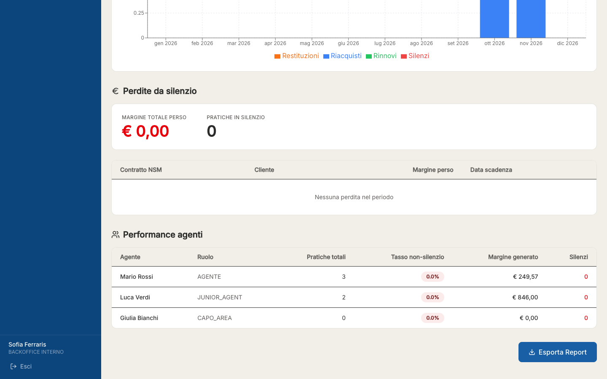
Fig. 17 — Perdite da silenzio e performance agenti
Perdite da silenzio
Tabella dettagliata con il margine perso per ogni pratica andata in silenzio.
Performance agenti
Classifica degli agenti con: pratiche totali, tasso non-silenzio, margine generato, numero di silenzi.
Export
Il bottone "Esporta Report" genera un file CSV con tutti i dati del periodo selezionato.
17. Export lista Grenke
Funzionalita per generare la lista di riepilogo da inviare a Grenke con lo stato di tutti i contratti.
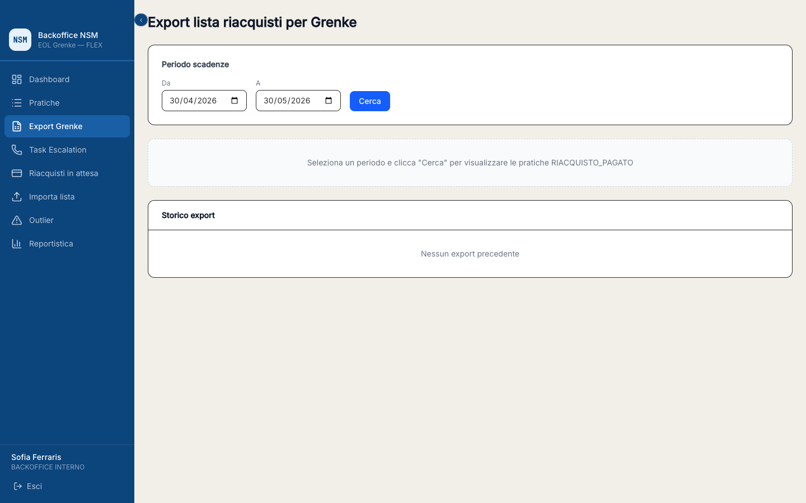
Fig. 18 — Pagina export lista Grenke
L'export include per ogni contratto: codice Grenke, ragione sociale, stato finale, decisione del cliente, data della decisione, note.
18. Ruoli e permessi
Matrice di accesso
| Funzionalita |
ADMIN |
BACKOFFICE |
CAPO AREA |
AGENTE |
| Dashboard | Si | Si | Si | Si |
| Lista pratiche | Si | Si | Si | Si |
| Dettaglio pratica | Si | Si | Si | Solo assegnate |
| I miei task | — | — | — | Si |
| Task escalation | Si | Si | Si | Solo assegnati |
| Riacquisti in attesa | Si | Si | Si | Solo assegnati |
| Importa lista | Si | Si | — | — |
| Gestione outlier | Si | Si | — | — |
| Invia comunicazioni | Si | Si | — | — |
| Reportistica | Si | Si | Si | — |
| Export Grenke | Si | Si | Si | — |
| Impostazioni | Si | — | — | — |
| Gestione utenti | Si | — | — | — |
Sidebar dinamica
Le voci del menu laterale vengono mostrate/nascoste automaticamente in base al ruolo dell'utente loggato. Ad esempio, un agente vede solo Dashboard, Pratiche, I miei task, Task escalation e Riacquisti in attesa.
19. Impostazioni amministratore
La sezione Impostazioni (accessibile solo agli utenti con ruolo ADMIN) permette di configurare tutti i parametri operativi della piattaforma senza toccare il codice. Le modifiche sono attive in tempo reale. È divisa in 7 tab.
19.1 Timeline
Configura i giorni esatti in cui vengono inviate le comunicazioni email e attivate le escalation telefoniche, contati a ritroso dalla data di scadenza del contratto (T0). La visualizzazione grafica mostra in tempo reale la posizione di ogni evento sulla linea del tempo.
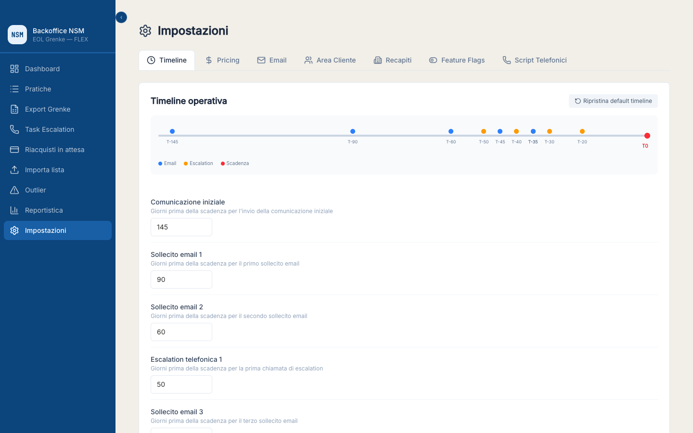
Fig. 19.1 — Tab Timeline: visualizzazione grafica degli eventi e configurazione dei giorni (T-145, T-90, T-60, ecc.)
| Evento | Default | Tipo |
|---|
| Comunicazione iniziale | T-145 | Email |
| Sollecito 1 | T-90 | Email |
| Sollecito 2 | T-60 | Email |
| Escalation 1 | T-50 | Telefonica |
| Sollecito 3 | T-45 | Email |
| Escalation 2 | T-40 | Telefonica |
| Sollecito 4 | T-35 | Email |
| Escalation 3 | T-30 | Telefonica |
| Ultimo sollecito | T-20 | Email |
Il pulsante Ripristina default timeline reimposta tutti i valori ai default di sistema in un click.
19.2 Pricing
Gestisce le percentuali usate per calcolare i prezzi di riacquisto e la commissione Grenke, più i tagli disponibili per le gift card. Un pannello di calcolo live mostra l'impatto delle modifiche su un contratto di esempio (canone 70 € × 36 mesi).
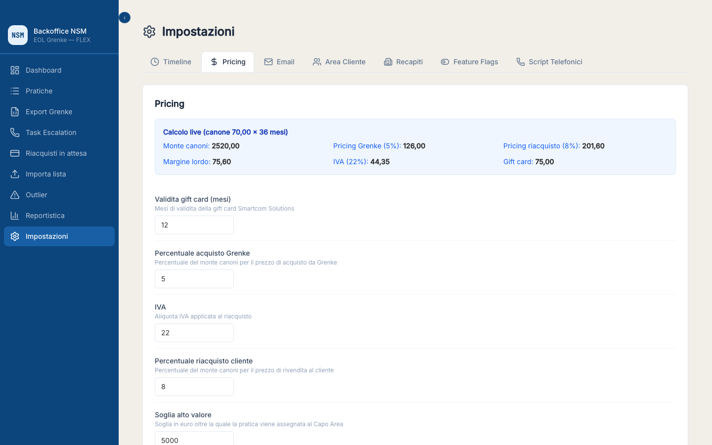
Fig. 19.2 — Tab Pricing: percentuali di calcolo e gestione dei tagli gift card con anteprima live
| Parametro | Default | Descrizione |
|---|
| Percentuale Grenke | 5% | Quota riconosciuta a Grenke sul monte canoni |
| Percentuale riacquisto | 8% | Prezzo di riacquisto espresso come % del monte canoni |
| IVA | 22% | Aliquota IVA a margine: applicata solo sulla differenza tra prezzo di riacquisto (8%) e prezzo Grenke (5%), non sul prezzo pieno |
| Tagli gift card | 25, 50, 75, 100… | Valori disponibili; viene assegnato il taglio più alto ≤ al margine lordo |
19.3 Email
Editor rich-text per modificare il corpo HTML di ogni template email inviato ai clienti. Ogni template supporta variabili dinamiche (es. {{ragione_sociale}}, {{link_area_cliente}}) che vengono sostituite automaticamente al momento dell'invio. Il pulsante Anteprima mostra l'email renderizzata prima del salvataggio.
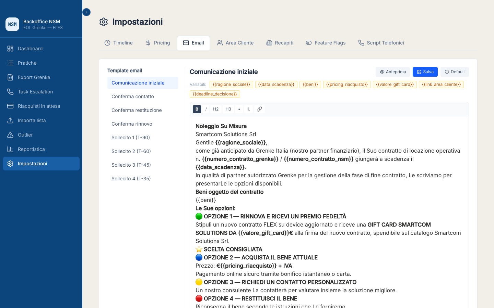
Fig. 19.3 — Tab Email: editor rich-text con lista template, barra variabili e anteprima HTML
Template disponibili: comunicazione iniziale, sollecito 1–4, ultimo sollecito, conferma riacquisto, conferma rinnovo, conferma restituzione, conferma contatto.
Variabili supportate: {{ragione_sociale}}, {{data_scadenza}}, {{beni}}, {{pricing_riacquisto}}, {{valore_gift_card}}, {{link_area_cliente}}, {{deadline_decisione}}
19.4 Area Cliente
Personalizza i testi mostrati nell'area cliente: titoli e descrizioni delle 4 card di scelta (Rinnova, Riacquisto, Contatto, Restituzione). Un'anteprima live mostra come le card appariranno al cliente prima di salvare.
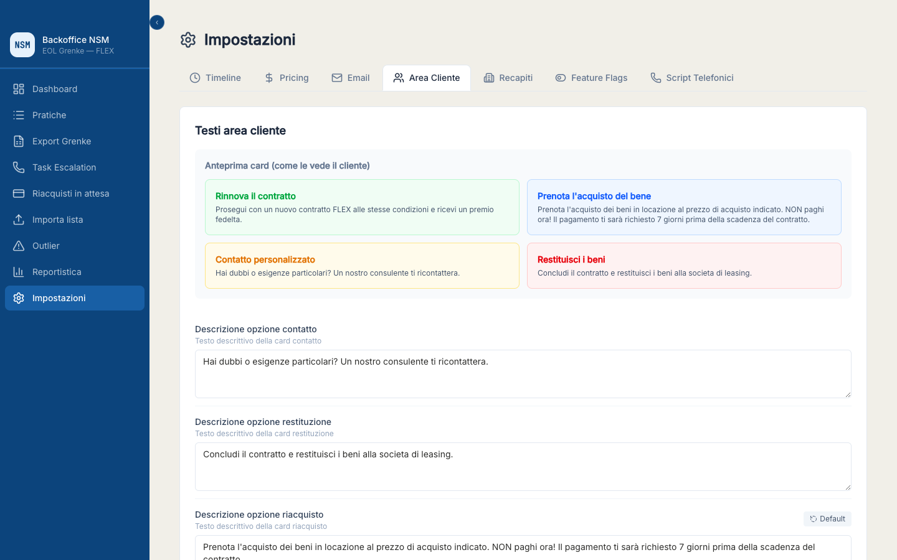
Fig. 19.4 — Tab Area Cliente: anteprima delle card cliente e editor dei testi
19.5 Recapiti
Inserisce i dati aziendali che compaiono nei PDF e nelle email inviate ai clienti: ragione sociale, indirizzo, telefono, email di assistenza, sito web. Ogni campo ha un pulsante Default per ripristinare il valore di sistema.
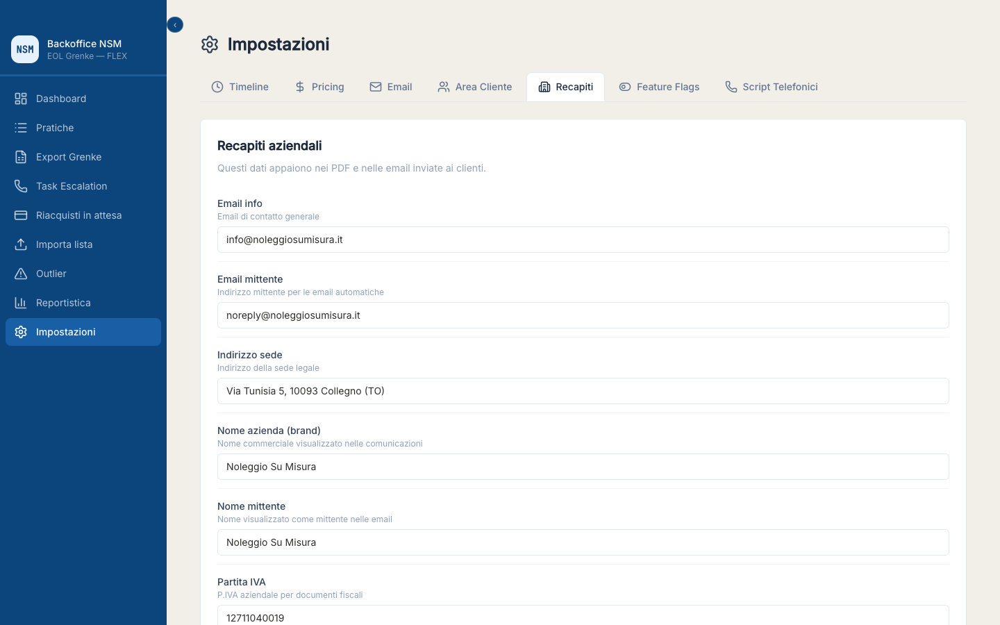
Fig. 19.5 — Tab Recapiti: dati aziendali visualizzati in PDF ed email
19.6 Feature Flags
Toggle on/off per abilitare o disabilitare funzionalità operative in produzione senza rilasci. I flag contrassegnati come Critico mostrano un avviso di conferma prima della disattivazione per evitare interruzioni accidentali del servizio.
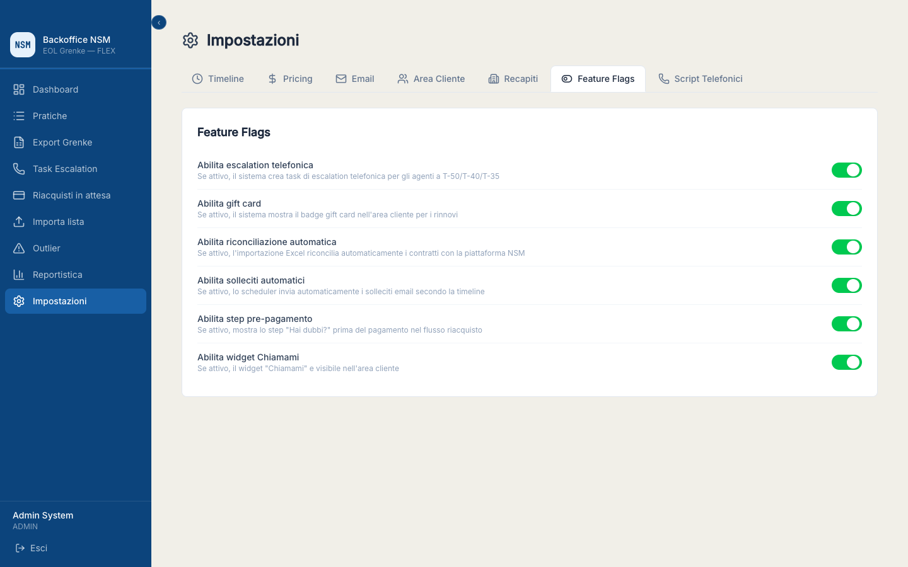
Fig. 19.6 — Tab Feature Flags: toggle on/off con avviso per i flag critici
| Flag | Effetto |
|---|
| Escalation telefonica | Abilita la generazione automatica dei task telefonici agli agenti |
| Solleciti automatici | Abilita l'invio automatico delle email di sollecito secondo la timeline |
| Modalità manutenzione | Mostra un banner di manutenzione nell'area cliente |
| OTP obbligatorio | Richiede verifica OTP per tutte le decisioni cliente |
19.7 Script Telefonici
Editor markdown per gli script di chiamata usati dagli agenti durante le escalation telefoniche (T-50, T-40, T-30). Ogni script include apertura, corpo della conversazione e gestione delle obiezioni più frequenti. Il pulsante Preview mostra lo script formattato prima del salvataggio.
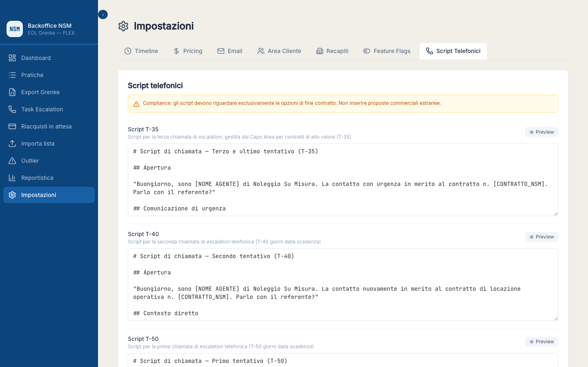
Fig. 19.7 — Tab Script Telefonici: editor markdown con preview degli script di chiamata
Compliance: gli script devono riguardare esclusivamente le opzioni di fine contratto (rinnovo, riacquisto, restituzione, contatto). Non inserire proposte commerciali non attinenti al contratto in scadenza.
20. Gestione utenti
La sezione Gestione Utenti (accessibile solo agli utenti con ruolo ADMIN) permette di creare, modificare, attivare e disattivare gli account degli operatori del backoffice.
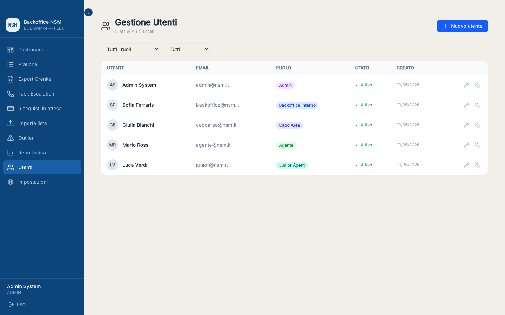
Fig. 20.1 — Tabella utenti con badge ruolo, stato attivo/disattivo e azioni rapide
Funzionalità
- Lista utenti — Tabella con nome, email, ruolo (badge colorato), stato e data di creazione
- Filtri — Per ruolo (Admin, Backoffice, Capo Area, Agente, ecc.) e per stato (attivi / disattivati)
- Crea utente — Modale con nome, cognome, email, selezione ruolo e password (minimo 8 caratteri)
- Modifica utente — Cambia nome, cognome, email, ruolo oppure resetta la password
- Attiva / Disattiva — Un utente disattivato non può più accedere al sistema ma i suoi dati storici (assegnazioni, timeline) vengono preservati
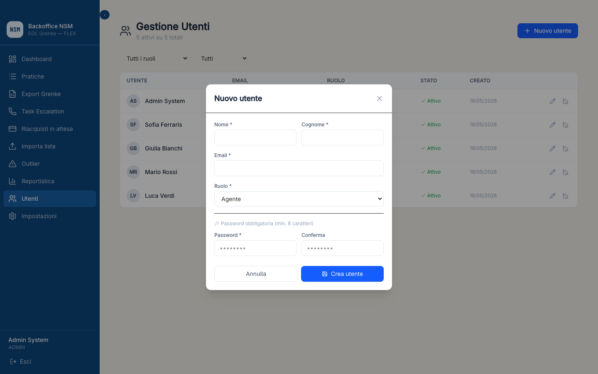
Fig. 20.2 — Form di creazione nuovo utente con selezione ruolo e password
Gerarchia agenti
I ruoli operativi seguono una gerarchia a cascata. Ogni livello ha visibilità su tutti i livelli sottostanti assegnati:
Agenzia
→
Capo Area
→
Group Manager
→
Agente
/
Junior Agent
| Ruolo | Visibilità | Superiore diretto |
|---|
| Agenzia | Vede tutto di tutti i Capi Area, Group Manager e Agenti assegnati | — |
| Capo Area | Vede tutto dei Group Manager assegnati e dei loro agenti | Agenzia |
| Group Manager | Vede tutto degli Agenti e Junior Agent assegnati | Capo Area |
| Agente | Vede solo le proprie pratiche | Group Manager |
| Junior Agent | Vede solo le proprie pratiche | Group Manager |
Ruoli di sistema (non gerarchici)
| Ruolo | Descrizione |
|---|
| ADMIN | Accesso completo: impostazioni, gestione utenti, tutte le funzionalità |
| BACKOFFICE INTERNO | Import liste, gestione outlier, invio comunicazioni, reportistica |
Assegnazione del superiore
Alla creazione o modifica di un utente, il sistema mostra automaticamente il campo "Superiore" con la lista dei possibili superiori in base al ruolo selezionato. Ad esempio, un Agente può avere come superiore solo un Group Manager; un Capo Area solo un'Agenzia.
Nota: La disattivazione di un utente è reversibile. Se necessario riattivare un account, è sufficiente cliccare l'icona di riattivazione dalla stessa pagina. I dati storici (assegnazioni, timeline) vengono sempre preservati.
Manuale Operativo — NSM EOL Grenke v1.0
Noleggio Su Misura / Smartcom Solutions Srl — 2026
Generato automaticamente dal sistema di documentazione